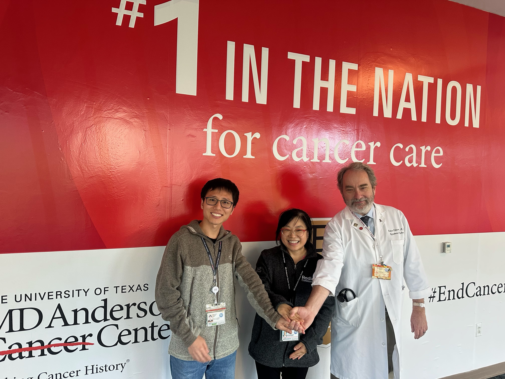
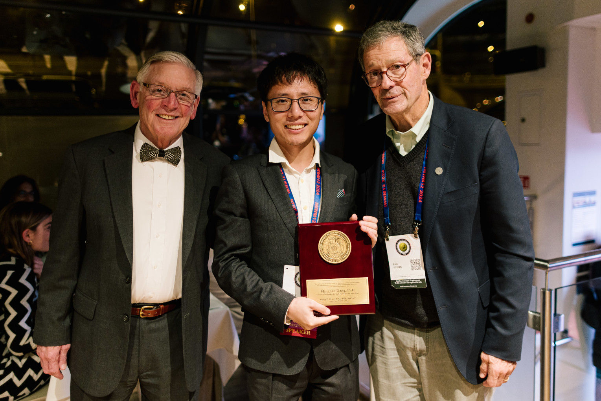
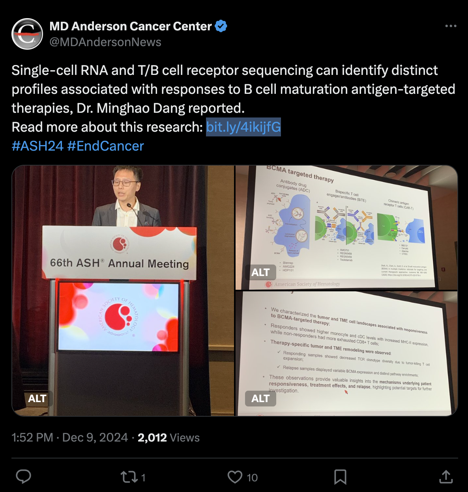

Cancer single-cell multi-omics
Using single-cell multi-omics to dissect tumor heterogeneity and clonal evolution across malignancies.
Joining Zhongshan School of Medicine, Sun Yat-sen University (Guangzhou)
Selected for China’s national overseas high-level talent program
I am Minghao Dang, a PhD in Biochemistry and Molecular Biology. My primary focus is multiple myeloma and other hematologic malignancies. My research uses single-cell multi-omics to study tumor heterogeneity, clonal evolution and remodeling of the tumor immune microenvironment, with a focus on precision immunotherapy.
Explore opportunitiesDr. Minghao Dang has been selected for China’s national overseas high-level talent program and will join Zhongshan School of Medicine, Sun Yat-sen University (Guangzhou). He earned his bachelor’s degree in Bioinformatics from Huazhong University of Science and Technology and his PhD in Biochemistry and Molecular Biology from the Institute of Biophysics, Chinese Academy of Sciences. He conducted computational biology research at Baylor College of Medicine and Duke University before joining MD Anderson Cancer Center in 2019 to work on cancer bioinformatics and single-cell multi-omics.
Using single-cell multi-omics to dissect tumor heterogeneity and clonal evolution across malignancies.
Investigating the tumor immune microenvironment and its remodeling to understand interactions between cancer and the immune system.
Studying precision immunotherapy in multiple myeloma and other hematologic malignancies.
Recent research has appeared in the following journals with Dr. Dang as first or co-first author.
Selected for China’s national overseas high-level talent program. Invited to give oral presentations at American Society of Hematology (ASH) annual meetings. Selected for the MSF Computational Biology Fellowship Program. Recipient of the IWWM Young Investigator Award and the ASH Abstract Achievement Award.



Single-cell RNA and T/B-cell receptor sequencing reveal profiles associated with responses to BCMA-targeted therapies.
View full image ↗Inquiries about graduate study and research positions are welcome.
We welcome prospective master’s and PhD students, postdoctoral researchers and research assistants with backgrounds in biology, bioinformatics, medicine, immunology, computer science or related fields. Please get in touch about shared research interests.
Cancer single-cell multi-omics, the tumor immune microenvironment and precision immunotherapy.
Please email to confirm eligibility, available positions, application timelines and training arrangements. Graduate admissions are subject to the university’s and school’s official policies.
When reaching out, please briefly introduce your educational background, research experience and scientific interests.
Email me to discuss opportunities or learn more about the research.
minghao.dang@hotmail.comSend an inquirySuggested subject: Position type + Your name + Research interest. You may attach your CV and selected research contributions.